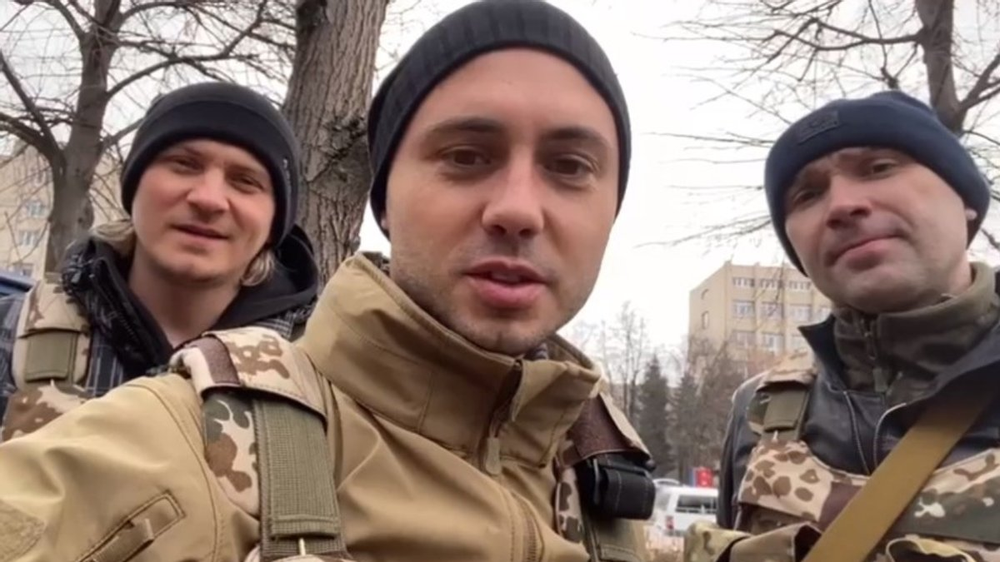

Valeriy Serhiyovych Markus (born July 14, 1993, Pervomaisk, Mykolaiv Oblast, according to other data — in Pervomaisk,
Luhansk Oblast, Ukraine) is a Ukrainian military man, veteran of the Russian-Ukrainian war, writer, blogger and
traveler, chief master sergeant of the 47th separate battalion.
Serves in the Armed Forces, in particular in the combat zone in Donbas, served in the 25th landing brigade.
Known for posts on Facebook and videos on YouTube, including about the war in eastern Ukraine and walking the 1,800 km
long St. Jacob's Way. On August 13, 2018, his first fiction book "Footprints on the Road" was published, part of which
takes place in Donbas during the war. The book became a bestseller and one of the most popular books in Ukraine in 2019.

Topolya Taras Volodymyrovych (June 21, 1988, Kyiv, Ukrainian SSR, USSR) is a soloist of the popular Ukrainian band
"Antitila", a youth ambassador for UNICEF in Ukraine, co-founder of the charity fund "Free - UA", a volunteer, a
volunteer of the Territorial Defense Forces of the Armed Forces of Ukraine.